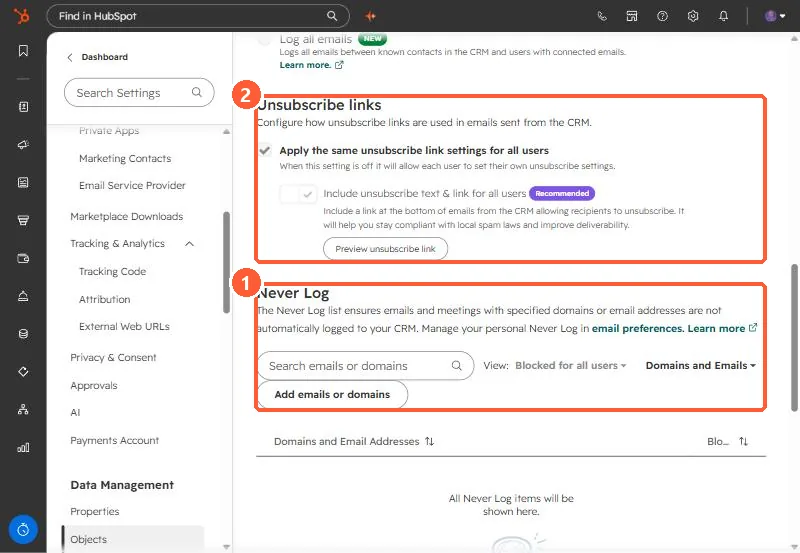

Short answer
The Never Log list keeps emails and meetings with specific addresses or domains out of the CRM. The account-wide list is in Settings, Objects, Activities, and needs Super Admin. Each user also has a personal list in their email preferences. Enter domains as @domain.com. HubSpot says listed addresses are excluded from email logging and contact creation, and tracking activity does not appear on the timeline.
1. The section
Open Activities settings and scroll to Never Log. The Meetings settings page links here too.


2. Account vs personal
- Account-wide entries apply to all users and team email accounts and are tagged All Users.
- Personal entries, added in your own email preferences, are tagged Only You.
- The View filter switches between them.
3. What to add
- Your own company domain, so internal threads stay out of contact timelines.
- Personal or sensitive correspondents.
- Vendors who are not customers.
For the rest of the logging settings, see email log and track settings.